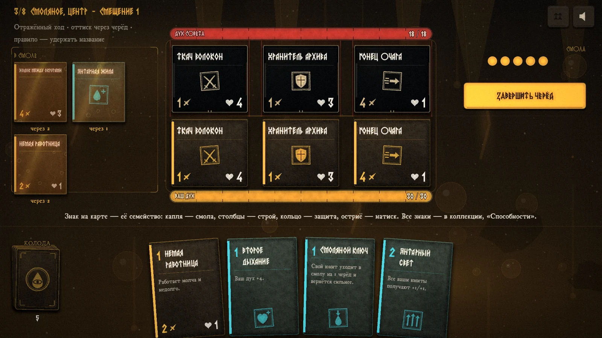
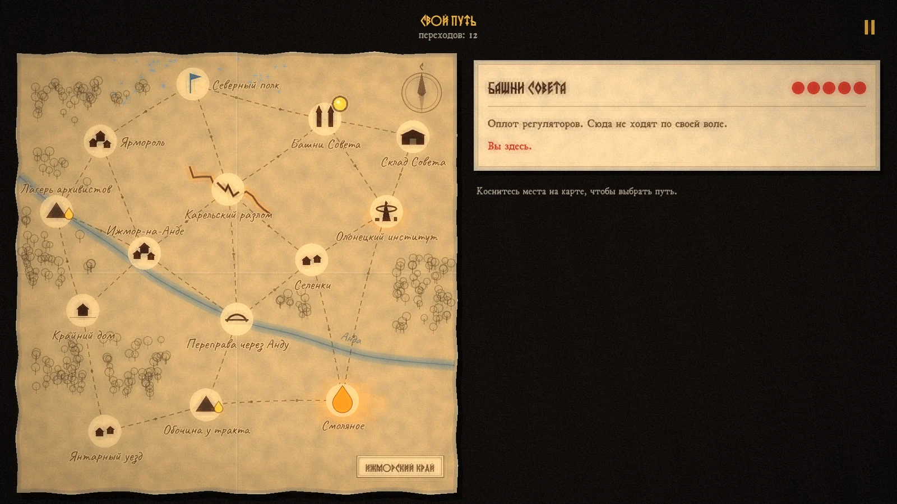
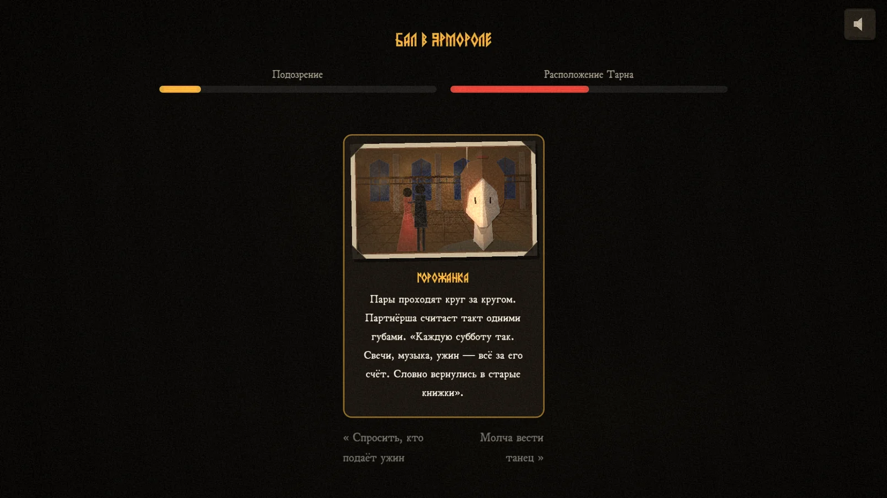
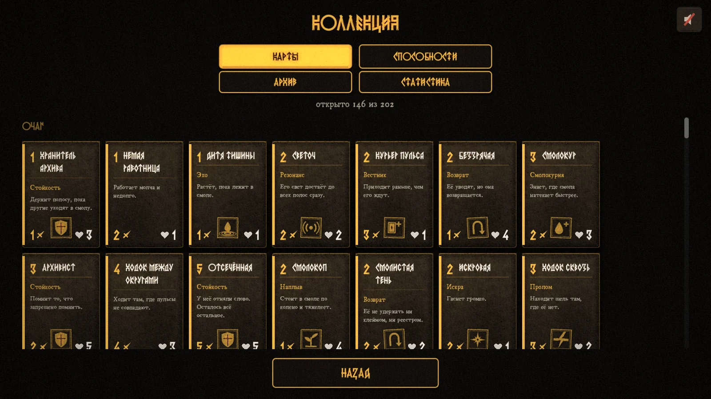
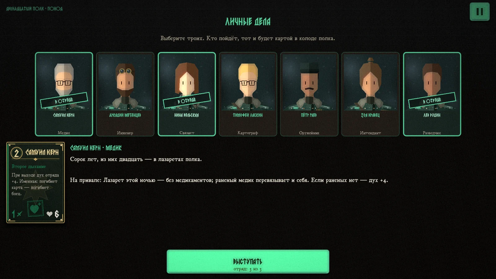
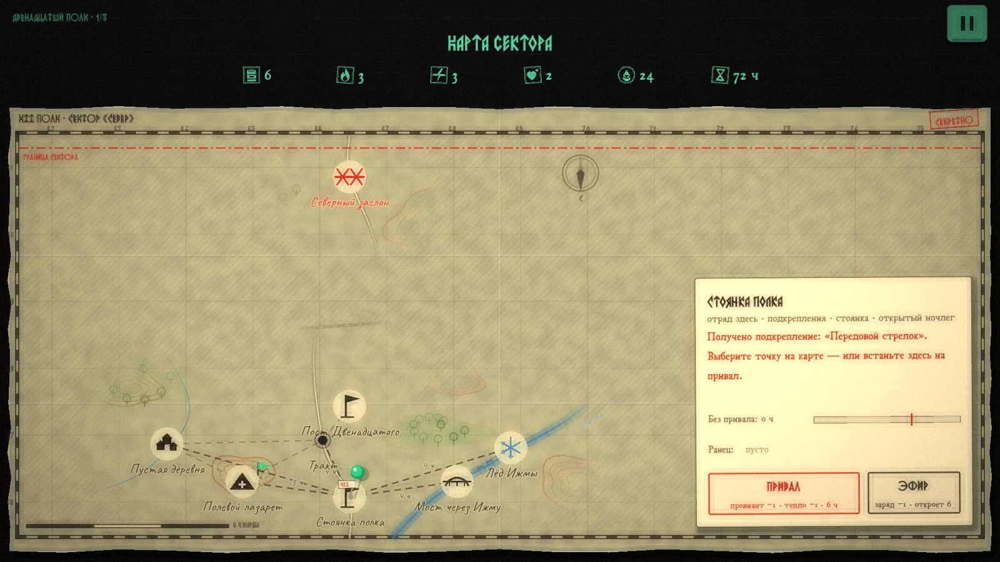

01Игра
Пульс:
Карты Очага
Карточный рогалик о памяти, времени и выборе принадлежности. Бой идёт на трёх полосах, противник заранее показывает свой ход. Между боями события, награды, магазин и истории в духе Reigns.
- Жанр
- Карточный рогалик
- Мир
- Восемь округов, три стороны со своими колодами, 202 карты
- Движок
- Godot
- Платформы
- Браузер, Windows, macOS, iOS, Android
- Роль
- Автор: геймдизайн, баланс, тексты, музыка





